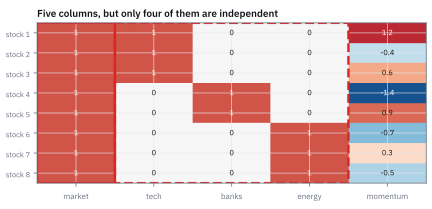
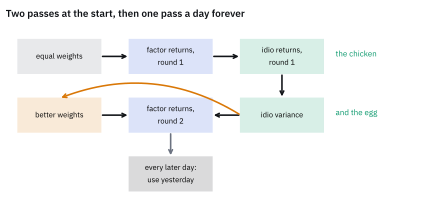

27.1 Cross-Sectional Regression and Rank-Deficient Loadings
factor return ไม่มีในข้อมูล ต้องหาเองทุกวันด้วย regression ข้ามหุ้น และวันแรกก็เจอสมการที่มีคำตอบนับไม่ถ้วน
แบบจำลองความเสี่ยงของหุ้น 8 ตัวมีห้า factor: market ที่หุ้นทุกตัวมี loading 1, industry สามกลุ่ม (tech, banks, energy) ที่หุ้นแต่ละตัวอยู่กลุ่มเดียว และ momentum นักพัฒนาสั่งไลบรารีหา factor return ของวันนี้ ได้ตัวเลขออกมาโดยไม่มีคำเตือน แล้วบอกว่า “market วันนี้ −0.03% tech +0.64% ใช้ได้เลย” เชื่อตัวเลขนี้ได้ไหม?
ลองตอบก่อนเปิดเฉลย
ยังไม่ได้ market เท่ากับผลรวมของ industry ทั้งสามพอดี คอลัมน์ห้าคอลัมน์จึงเป็นอิสระกันแค่สี่ สมการมีคำตอบที่ดีเท่ากันนับไม่ถ้วน ไลบรารีเลือกให้หนึ่งคำตอบเงียบ ๆ (คำตอบที่สั้นที่สุด: market −0.0324% tech +0.6366%) ถ้าลบคอลัมน์ energy ทิ้งจะได้ −0.6466% กับ +1.2508% ถ้าตั้งเงื่อนไขถ่วงมูลค่าตลาดได้ −0.0666% กับ +0.6708% ทั้งสามชุดทำนายผลตอบแทนหุ้นทุกตัวได้เท่ากันเป๊ะ และให้ momentum 0.4741% เท่ากัน ต่างกันแค่การแบ่งเครดิตระหว่าง market กับ industry ซึ่งต้องเลือกเองอย่างรู้ตัว
สิ่งที่เราจะสร้าง
บทที่ 26 ใช้ factor return $\mathbf f_t$ ราวกับว่ามีอยู่ในข้อมูล แต่ข้อมูลจริงมีแค่ผลตอบแทนของหุ้นทุกตัว กับคุณสมบัติของบริษัทที่รู้ตั้งแต่เมื่อวาน (loading) factor return ต้องหาเองจากสองอย่างนั้น ด้วย regression ที่วิ่งข้ามหุ้นในวันเดียว (cross-sectional) แล้วทำใหม่ทุกวัน
เราจะตั้งสมการ อธิบายว่าทำไมถ่วงน้ำหนักด้วยหนึ่งส่วน idiosyncratic variance และทำไมคำตอบคือผลตอบแทนของพอร์ตที่ซื้อได้จริง จากนั้นเจอปัญหาของวันแรก: คอลัมน์ที่ซ้ำกันโดยโครงสร้าง หาทิศที่ข้อมูลมองไม่เห็น เทียบสามทางแก้ด้วยตัวเลข เทียบการถ่วงกับไม่ถ่วง และแก้ปัญหาไก่กับไข่ของน้ำหนัก
ศัพท์ที่ใช้ในหัวข้อนี้
- Cross-sectional regression
- regression ที่ข้อมูลแต่ละแถวคือหุ้นหนึ่งตัวในวันเดียวกัน ทำซ้ำทุกวัน ใช้หา factor return ของ fundamental factor model
- Fundamental factor model
- แบบจำลองที่ loading มาจากคุณสมบัติของบริษัท (กลุ่มอุตสาหกรรม momentum ขนาด) ซึ่งรู้ล่วงหน้า ส่วน factor return ต้องประมาณจากข้อมูล
- WLS (weighted least squares)
- หาค่าที่ทำให้ผลรวมความคลาดเคลื่อนกำลังสองที่ถ่วงน้ำหนักน้อยที่สุด ใช้เมื่อข้อมูลแต่ละแถวน่าเชื่อถือไม่เท่ากัน OLS คือกรณีน้ำหนักเท่ากันหมด
- Rank และ rank-deficient
- rank คือจำนวนคอลัมน์ที่เป็นอิสระกันจริง (7.5) ถ้าน้อยกว่าจำนวนคอลัมน์ (rank-deficient) สมการมีคำตอบที่ดีเท่ากันนับไม่ถ้วน
- Null direction
- ทิศ $\mathbf v$ ที่ $\mathbf B\mathbf v=\mathbf 0$ บวกเข้าไปในคำตอบเท่าไรก็ได้โดยคำทำนายไม่เปลี่ยน
- Factor-mimicking portfolio
- พอร์ตหุ้นที่ผลตอบแทนเท่ากับ factor return ที่ประมาณได้พอดี มี exposure 1 ต่อ factor ของมัน และ 0 ต่อ factor อื่น
สัญลักษณ์และหน่วย
| สัญลักษณ์ | ความหมาย | หน่วย |
|---|---|---|
| $\mathbf r_t$ | ผลตอบแทนส่วนเกินของหุ้น $n$ ตัวในวัน $t$ | ทศนิยมต่อวัน |
| $\mathbf B$ | loadings matrix $n\times m$ ที่รู้ก่อนวันเริ่ม | ไม่มีหน่วย |
| $\mathbf f_t,\ \boldsymbol\epsilon_t$ | factor return ที่ต้องหา และส่วนเฉพาะตัว (idiosyncratic return) | ทศนิยมต่อวัน |
| $\mathbf W,\ \sigma_i$ | น้ำหนัก $w_i=1/\sigma_i^2$ บนแนวทแยง และความผันผวนเฉพาะตัวของหุ้น $i$ | ต่อทศนิยม², ทศนิยมต่อวัน |
| $\mathbf H$ | matrix ที่แปลงผลตอบแทนหุ้นเป็น factor return ($\hat{\mathbf f}=\mathbf H\mathbf r$) | ไม่มีหน่วย |
| $\mathbf v,\ \mathbf c$ | null direction และเวกเตอร์ของเงื่อนไขที่เติม | ไม่มีหน่วย |
ขั้นที่ 1 — สมการที่ต้องแก้ทุกวัน
ผลตอบแทนของหุ้นแต่ละตัวคือ loading คูณ factor return บวกส่วนเฉพาะตัว (26.1) ในวันหนึ่ง $\mathbf r$ กับ $\mathbf B$ รู้แล้ว ที่ไม่รู้คือ $\mathbf f$ เราเลือก $\mathbf f$ ที่ทำให้ส่วนที่อธิบายไม่ได้เล็กที่สุด โดยให้หุ้นที่เหวี่ยงน้อยมีเสียงดังกว่า นี่คือนิยามของปัญหา ตามด้วยคำตอบแบบ normal equations ของ 15.1
$\hat{\mathbf f}$ คือค่าที่ทำให้ $S(\mathbf f)$ น้อยที่สุด บรรทัดที่ห้าได้จากการตั้ง gradient ของ $S$ ให้เป็นศูนย์ เหมือน 15.1 แต่มี $\mathbf W$ (แนวทแยงเป็น $w_i$) คั่นกลาง
ทำไมน้ำหนักเป็น $1/\sigma_i^2$: หุ้นที่ส่วนเฉพาะตัวเหวี่ยงแรงบอกเรื่อง factor ได้น้อยกว่า และน้ำหนักนี้ให้ค่าประมาณที่ไม่เอนและผันผวนน้อยที่สุดในบรรดาวิธีเชิงเส้น (Gauss–Markov)
บรรทัดสุดท้ายสำคัญกว่าที่เห็น: factor return แต่ละตัวคือผลรวมถ่วงของผลตอบแทนหุ้น ซึ่งก็คือผลตอบแทนของพอร์ตหนึ่งที่ซื้อได้จริง และเพราะ $\mathbf H\mathbf B=\mathbf I$ พอร์ตของ factor ที่ $k$ มี exposure 1 ต่อ factor ของมัน และ 0 ต่อ factor อื่น เรียกว่า factor-mimicking portfolio
ขั้นที่ 2 — ข้อมูลของวันนี้
โจทย์ให้อะไรมาบ้าง: หุ้น 8 ตัว คอลัมน์ของ $\mathbf B$ คือ market (1 ทุกตัว) tech (หุ้น 1–3) banks (หุ้น 4–5) energy (หุ้น 6–8) และ momentum ตัวเลขทั้งหมดเป็นตัวอย่างสมมติ
| หุ้น | กลุ่ม | $r$ (%) | momentum | $\sigma$ (%) | cap |
|---|---|---|---|---|---|
| 1 | tech | 1.20 | 1.2 | 1.8 | 300 |
| 2 | tech | 0.35 | −0.4 | 2.2 | 180 |
| 3 | tech | 0.90 | 0.6 | 1.5 | 220 |
| 4 | banks | −0.60 | −1.4 | 2.6 | 400 |
| 5 | banks | 0.25 | 0.9 | 2.0 | 150 |
| 6 | energy | −1.10 | −0.7 | 2.4 | 260 |
| 7 | energy | −0.40 | 0.3 | 1.7 | 340 |
| 8 | energy | −0.95 | −0.5 | 2.1 | 190 |
คำตอบที่ต้องหา: ทิศที่ทำให้สมการไม่มีคำตอบเดียว factor return จากสามทางแก้ และผลของการถ่วงน้ำหนัก มูลค่าตลาด (cap) เป็นล้านดอลลาร์ ใช้ในขั้นที่ 4
ตรวจเองใน 10 วินาที: ทุกแถวของสามคอลัมน์ industry มีเลข 1 ตัวเดียว ผลรวมสามคอลัมน์จึงเป็น 1 ทุกแถว เท่ากับคอลัมน์ market ปัญหาของขั้นถัดไปจึงเห็นได้ก่อนคำนวณ
Figure 27.1a — market เท่ากับผลรวมของ industry พอดี

ตาราง loading ของหุ้น 8 ตัว คอลัมน์คือ market, tech, banks, energy และ momentum กรอบแดงทึบคือ market ที่เป็น 1 ทุกแถว กรอบแดงประคือสาม industry ป้ายบนรูปบอกว่าบวกสามคอลัมน์ในกรอบประจะได้คอลัมน์ในกรอบทึบ ห้าคอลัมน์จึงเป็นอิสระกันแค่สี่
ขั้นที่ 3 — ทิศที่ข้อมูลมองไม่เห็น
ถ้ามีทิศ $\mathbf v$ ที่ $\mathbf B\mathbf v=\mathbf 0$ ทุกแถว การบวก $\mathbf v$ เข้าไปในคำตอบกี่เท่าก็ได้ไม่เปลี่ยนคำทำนายของหุ้นตัวไหนเลย ข้อมูลจึงบอกไม่ได้ว่าควรบวกเท่าไร ขั้นนี้หาทิศนั้นแล้วดูผลที่ตามมา
อ่าน $\mathbf v$ เป็นภาษาคนได้ว่า “เพิ่ม market หนึ่งหน่วย แล้วลดทุก industry หนึ่งหน่วย” หุ้นทุกตัวได้ market มาหนึ่งและเสีย industry ของตัวเองไปหนึ่ง ผลรวมเป็นศูนย์ ตำแหน่งสุดท้ายเป็นศูนย์ momentum จึงไม่เกี่ยวกับความกำกวมนี้เลย
ผลในทางปฏิบัติคือ $\mathbf B^{\mathsf T}\mathbf W\mathbf B$ ผกผันไม่ได้ สูตรของขั้นที่ 1 ใช้ตรง ๆ ไม่ได้ บางไลบรารีหยุดและเตือน บางไลบรารีคืนตัวเลขมาเงียบ ๆ อย่างหลังอันตรายกว่า เพราะไม่มีใครรู้ว่ามันเลือกอะไรไปแล้ว
ขั้นที่ 4 — สามทางแก้ ต่างกันที่ข้อมูลชิ้นที่เติม
ทุกทางแก้เติมข้อมูลหนึ่งชิ้นเพื่อเลือกหนึ่งจุดบนเส้น $\hat{\mathbf f}+s\,\mathbf v$ สิ่งที่ต่างคือชิ้นนั้นมีความหมายทางธุรกิจหรือไม่
ทาง A ลบคอลัมน์ energy ทิ้ง ง่ายที่สุด แต่ industry ที่เหลือกลายเป็น “เทียบกับ energy” ทาง B ใช้ pseudo-inverse (เครื่องหมาย $^{+}$) ซึ่งเลือกคำตอบที่ยาวน้อยที่สุดในบรรดาคำตอบที่ดีที่สุดทั้งหมด และเป็นสิ่งที่ไลบรารีหลายตัวทำเงียบ ๆ ฟังดูเป็นกลาง แต่ความยาวของเวกเตอร์ไม่มีความหมายทางธุรกิจ
ทาง C ตั้งเงื่อนไขว่าผลตอบแทนของ industry ถ่วงด้วยสัดส่วนมูลค่าตลาดรวมเป็นศูนย์ $\mathbf c$ มีค่าเฉพาะสามช่องของ industry (ช่อง market และ momentum เป็นศูนย์) และคือสัดส่วนมูลค่าของ tech $700/2{,}040$ banks $550/2{,}040$ และ energy $790/2{,}040$
ความหมายคือ ถ้าถือทั้งตลาดตามมูลค่า จะไม่ได้หรือเสียอะไรจาก industry ทุกอย่างมาจาก market market factor จึงเป็นผลตอบแทนของตลาดจริง
ขั้นที่ 5 — ตัวเลขจากสามทาง
โจทย์ให้อะไรมาบ้าง: ข้อมูลของขั้นที่ 2 น้ำหนัก $1/\sigma_i^2$ แก้ทาง A ด้วยสูตรของขั้นที่ 1 บน 4 คอลัมน์ แก้ทาง C ด้วยตัวคูณ Lagrange หนึ่งตัวของ 12.4 และหาทาง B โดยเลื่อนคำตอบ C ไปตามทิศ $\mathbf v$ จนความยาวสั้นที่สุด (เรียงเป็น market, tech, banks, energy, momentum)
| factor (%) | ทาง A | ทาง C | ทาง B | A − C |
|---|---|---|---|---|
| market | −0.6466 | −0.0666 | −0.0324 | −0.58 |
| tech | 1.2508 | 0.6708 | 0.6366 | 0.58 |
| banks | 0.5593 | −0.0207 | −0.0549 | 0.58 |
| energy | 0 | −0.5800 | −0.6142 | 0.58 |
| momentum | 0.4741 | 0.4741 | 0.4741 | 0 |
คำตอบ: สามชุดต่างกันเฉพาะในทิศ $\mathbf v$ momentum เท่ากันทุกทางที่ 0.4741% ทาง C ให้ market −0.0666% ซึ่งตีความได้ว่าตลาดทั้งตลาดลงเล็กน้อย ส่วนทาง A ให้ −0.6466% ซึ่งที่จริงคือผลตอบแทนของหุ้น energy ที่ momentum เป็นศูนย์
ตรวจเองใน 10 วินาที: หุ้นตัวแรก ทาง A: $-0.6466+1.2508+1.2(0.4741)=1.1731\%$ ทาง C: $-0.0666+0.6708+1.2(0.4741)=1.1731\%$ เท่ากัน ทุกตัวต่างกันไม่เกิน $4\times10^{-18}$ ซึ่งเป็นแค่เศษของเครื่องคิดเลข
Figure 27.1b — ตัวเลขคนละชุด คำทำนายชุดเดียวกัน

แผงซ้ายคือ factor return ของทาง A (ส้ม) กับทาง C (ฟ้า) market และสาม industry ต่างกัน 0.58 จุดทุกตัว momentum เท่ากัน แผงขวาคือผลตอบแทนที่ทำนายให้หุ้น 8 ตัว วงกลมส้มกับกากบาทฟ้าทับกันสนิท จุดดำคือผลตอบแทนที่เกิดจริง ส่วนที่ห่างจากจุดดำคือ idiosyncratic return ซึ่งก็เท่ากันทุกทาง
ขั้นที่ 6 — factor return คือพอร์ตที่ซื้อได้: ดูน้ำหนักจริง
ขั้นที่ 1 บอกว่าแต่ละ factor return คือพอร์ตหนึ่งพอร์ต ลองกางแถวของ $\mathbf H$ (ทาง A) ออกมาดูเป็นน้ำหนักของหุ้น 8 ตัว แล้วตรวจสิ่งที่พอร์ตนั้นต้องมี
| หุ้น | กลุ่ม | $h_{\text{mom}}$ | $h_{\text{mkt}}$ |
|---|---|---|---|
| 1 | tech | 0.200 | 0.0352 |
| 2 | tech | −0.211 | −0.0370 |
| 3 | tech | 0.010 | 0.0018 |
| 4 | banks | −0.223 | −0.0392 |
| 5 | banks | 0.223 | 0.0392 |
| 6 | energy | −0.095 | 0.2159 |
| 7 | energy | 0.172 | 0.4937 |
| 8 | energy | −0.077 | 0.2903 |
พอร์ตของ momentum ซื้อหุ้นที่ momentum สูง ขายหุ้นที่ momentum ต่ำ ใช้เงินสุทธิศูนย์ มี exposure 1 ต่อ momentum และ 0 ต่อ market กับ industry ผลตอบแทนของพอร์ตนี้วันนี้คือ 0.4741% พอดี ตัวเลขใน regression จึงเป็นเงินที่เกิดขึ้นได้จริง
บรรทัดสุดท้ายเปิดโปงทาง A: พอร์ตของ “market” ในทางนี้ลงเงินเกือบทั้งหมดในหุ้น energy สามตัว น้ำหนักรวม 1 ตรงกับที่ขั้นที่ 5 บอกว่า market ของทาง A คือ energy ที่ momentum เป็นศูนย์ ใครอ่านรายงานว่า market ลง 0.65% จะเข้าใจผิดทั้งห้อง
ขั้นที่ 7 — ถ่วงกับไม่ถ่วงต่างกันแค่ไหน
รันทาง A ซ้ำด้วยน้ำหนักเท่ากันหมด (OLS) แล้วเทียบกับ WLS ของขั้นที่ 5 ความต่างรายวันดูเล็ก แต่คำถามคือมันมาจากไหน
| factor (%) | OLS | WLS | $d_k$ |
|---|---|---|---|
| market | −0.6794 | −0.6466 | −0.0328 |
| tech | 1.2826 | 1.2508 | 0.0318 |
| banks | 0.6188 | 0.5593 | 0.0595 |
| momentum | 0.4575 | 0.4741 | −0.0166 |
ความต่างมากที่สุด 0.0595 จุดอยู่ที่ banks ซึ่งมีหุ้นแค่สองตัวและหนึ่งในนั้นเหวี่ยงที่สุด
หุ้นที่เงียบที่สุด (ตัวที่ 3, σ 1.5%) ได้น้ำหนักสามเท่าของตัวที่เหวี่ยงที่สุด (ตัวที่ 4, σ 2.6%) เพราะข้อมูลของมันบอกเรื่อง factor ได้ชัดกว่า ในตลาดจริงที่ความผันผวนเฉพาะตัวต่างกันห้าเท่า อัตราส่วนน้ำหนักเป็น 25 เท่า
ความต่าง 0.06 จุดในวันเดียวไม่ใช่เรื่องใหญ่ แต่ถ้าเอนไปทางเดิมทุกวัน 252 วันจะสะสมเป็นราว 15 จุดต่อปี ซึ่งบิดรายงานแยกผลงานของ 26.6 ได้ทั้งใบ OLS ไม่ได้ผิดเพราะเอน แต่ผิดเพราะให้เสียงหุ้นที่มีสัญญาณรบกวนมากเท่ากับหุ้นที่มีน้อย
Figure 27.1c — หุ้นเงียบพูดดังกว่าในสมการ

แกนนอนคือหุ้น 1 ถึง 8 (ความผันผวนเฉพาะตัวเขียนใต้แกน) แท่งเทาคือน้ำหนักเท่ากันของ OLS แท่งฟ้าคือน้ำหนัก $1/\sigma_i^2$ ของ WLS ปรับให้เฉลี่ยเป็น 1 ลูกศรชี้ว่าหุ้นที่เงียบที่สุดได้น้ำหนัก 3.00 เท่าของตัวที่เหวี่ยงที่สุด
ขั้นที่ 8 — ไก่กับไข่: น้ำหนักมาจากผลลัพธ์ของตัวเอง
น้ำหนักของขั้นที่ 1 ต้องใช้ $\sigma_i$ แต่ $\sigma_i$ คือความผันผวนของ idiosyncratic return ซึ่งจะมีได้ก็ต่อเมื่อหา factor return เสร็จแล้ว ทางออกคือวนสองรอบในช่วงเริ่ม แล้วใช้ค่าของเมื่อวานตลอดไป
รอบแรกไม่ถ่วงเลยเพื่อให้ได้ส่วนเฉพาะตัวชุดแรกตลอดประวัติข้อมูลช่วงเริ่ม แล้วใช้มันคำนวณความผันผวนเฉพาะตัวของแต่ละหุ้น (27.4 สอนวิธีคำนวณให้ดี) รอบที่สองใช้ความผันผวนนั้นเป็นน้ำหนัก หลังจากนั้นทุกวันใช้ค่าที่ประมาณได้ถึงเมื่อวาน เพราะมันเปลี่ยนช้า
คำว่า “ถึงเมื่อวาน” สำคัญ ถ้าเผลอใช้ความผันผวนที่รวมวันนี้ หุ้นที่บังเอิญเหวี่ยงแรงวันนี้จะได้น้ำหนักต่ำ แบบจำลองก็เหมือนรู้ล่วงหน้าว่าใครจะเหวี่ยง ส่วนเฉพาะตัวออกมาเล็กเกินจริง
Figure 27.1d — วนสองรอบตอนเริ่ม แล้ววันละรอบตลอดไป

แผนภาพลำดับงานของขั้นที่ 8 แถวบน: น้ำหนักเท่ากัน → factor return รอบหนึ่ง → idiosyncratic return รอบหนึ่ง แถวกลาง: idiosyncratic variance → น้ำหนักที่ดีกว่า → factor return รอบสอง กล่องล่างคือวันต่อ ๆ ไปที่ใช้ค่าของเมื่อวาน ป้าย the chicken กับ and the egg ชี้คู่ที่พึ่งกันและกัน
คำถามที่ควรถามออกมาดัง ๆ
ถ้าคำทำนายเหมือนกันทุกทาง จะเลือกทางไหนก็ได้ไม่ใช่หรือ? ความเสี่ยงของพอร์ตและ idiosyncratic return เหมือนกันจริง แต่รายงานว่าเงินได้หรือเสียจาก factor ไหน (26.6) เปลี่ยนไปทั้งใบ ทาง A บอกว่าวันนี้ market ลง 0.65% ทาง C บอกว่าลง 0.07% คนอ่านรายงานตัดสินใจต่างกันแน่นอน
ถ้าไม่มี market factor ปัญหาก็หายใช่ไหม? หาย แต่ต้องการ market factor ไว้ตอบคำถามว่าพอร์ตเสี่ยงต่อตลาดเท่าไร ปัญหาเดียวกันเกิดกับ loading ใด ๆ ที่รวมกันเป็นคอลัมน์อื่นได้ เช่นประเทศหลายประเทศบวกกับ factor โลก
ความผิดที่ให้คำตอบผิดแบบเงียบ ๆ
ปล่อยให้ไลบรารีเลือกเอง: ได้ทาง B โดยไม่รู้ตัว market −0.0324% ที่ไม่มีใครอธิบายได้ว่ามาจากเงื่อนไขอะไร
เปลี่ยนเงื่อนไขกลางประวัติข้อมูล: ถ้าเคยใช้ทาง A แล้วเปลี่ยนเป็นทาง C ทุก factor ยกเว้น momentum จะกระโดด 0.58 จุดในวันที่เปลี่ยน ทั้งที่ไม่มีอะไรเกิดในตลาด การทดสอบย้อนหลังที่คร่อมวันนั้นจะเห็นเหตุการณ์ปลอม
ใช้ข้อมูลของวันนี้ทำน้ำหนักของวันนี้: ส่วนเฉพาะตัวเล็กเกินจริง ความเสี่ยงที่รายงานต่ำเกินจริงตาม
ใช้ทำอะไรบนโต๊ะจริง
ทีมแบบจำลองความเสี่ยงรัน regression นี้ทุกคืนบนหุ้นหลายพันตัว เลือกทาง C ครั้งเดียวแล้วไม่เปลี่ยน เก็บน้ำหนักจากความผันผวนเฉพาะตัวของเมื่อวาน และตรวจ rank ของ $\mathbf B$ ทุกวัน เพราะ loading ของหุ้นที่เข้าออกจากกลุ่มอาจสร้างคอลัมน์ซ้ำใหม่ได้ เช่น industry ที่เหลือหุ้นตัวเดียว
สามโจทย์ตรวจความเข้าใจ
1. ถ้าลบคอลัมน์ tech ทิ้งแทน energy ค่า tech จะเป็นเท่าไร และ market จะเป็นเท่าไร (ใช้ความจริงที่ว่าทุกคำตอบต่างกันแค่ในทิศ $\mathbf v$)?
เฉลย
เริ่มจากทาง C แล้วบวก $s\mathbf v$ จน tech เป็นศูนย์: $0.6708-s=0$ จึง $s=0.6708$ market $=-0.0666+0.6708=0.6042\%$ banks $=-0.0207-0.6708=-0.6915\%$ energy $=-0.5800-0.6708=-1.2508\%$ momentum ยังเป็น 0.4741% คำทำนายทุกตัวยังเท่าเดิม
2. ถ้ามีสองประเทศ ทุกหุ้นอยู่ประเทศเดียว และแบบจำลองมี factor โลก (1 ทุกตัว) ประเทศ A และประเทศ B null direction คืออะไร?
เฉลย
$\mathbf v=(1,-1,-1)$ เรียง (โลก, A, B) เพราะเพิ่มโลกหนึ่งหน่วยแล้วลดทุกประเทศหนึ่งหน่วย หุ้นทุกตัวได้ศูนย์ ถ้ายังมี industry ที่รวมกันเป็น 1 อีกชุด จะมี null direction เพิ่มอีกหนึ่ง ต้องเติมเงื่อนไขสองข้อ
3. ถ้าความผันผวนเฉพาะตัวของหุ้นในตลาดอยู่ระหว่าง 1% ถึง 4% ต่อวัน หุ้นที่เงียบที่สุดได้น้ำหนักกี่เท่าของตัวที่เหวี่ยงที่สุด?
เฉลย
$(4/1)^2=16$ เท่า ถ้ากว้าง 1% ถึง 5% เป็น 25 เท่า การถ่วงน้ำหนักจึงสำคัญกว่าในตลาดจริงมากกว่าในโจทย์แปดตัวที่ห่างกันแค่ 3 เท่า
คำนวณซ้ำด้วย JavaScript
โค้ดนี้สร้าง loadings matrix หา rank และ null direction แก้ WLS แบบลบคอลัมน์และแบบมีเงื่อนไข (ตัวคูณ Lagrange) หาคำตอบที่สั้นที่สุด ตรวจว่าทุกทางทำนายเท่ากัน และเทียบกับ OLS แล้วพิมพ์ตัวเลขหลักออกมาหนึ่งบรรทัด
function matrix(name, A) {
if (!Array.isArray(A) || A.length === 0 || !A.every(row => Array.isArray(row) && row.length === A[0].length && row.every(Number.isFinite))) {
throw new TypeError(`${name} must be a non-empty rectangular array of finite numbers`);
}
return A;
}
const T = A => A[0].map((_, j) => A.map(row => row[j]));
const mul = (A, B) => A.map(row => B[0].map((_, j) => row.reduce((s, a, k) => s + a * B[k][j], 0)));
const col = v => v.map(x => [x]);
// Gaussian elimination with partial pivoting: solves A x = b, refuses a singular A.
function solve(A, b) {
matrix('A', A);
const n = A.length, M = A.map((row, i) => [...row, b[i]]);
for (let k = 0; k < n; k++) {
let p = k;
for (let i = k + 1; i < n; i++) if (Math.abs(M[i][k]) > Math.abs(M[p][k])) p = i;
if (Math.abs(M[p][k]) < 1e-12) throw new RangeError('matrix is singular: the factors are not identified');
[M[k], M[p]] = [M[p], M[k]];
for (let i = k + 1; i < n; i++) {
const f = M[i][k] / M[k][k];
for (let j = k; j <= n; j++) M[i][j] -= f * M[k][j];
}
}
const x = new Array(n).fill(0);
for (let i = n - 1; i >= 0; i--) x[i] = (M[i][n] - M[i].slice(i + 1, n).reduce((s, a, j) => s + a * x[i + 1 + j], 0)) / M[i][i];
return x;
}
// Rank by elimination (count the pivots that survive).
function rank(A) {
const M = matrix('A', A).map(row => [...row]);
let r = 0;
for (let c = 0; c < M[0].length && r < M.length; c++) {
let p = r;
for (let i = r + 1; i < M.length; i++) if (Math.abs(M[i][c]) > Math.abs(M[p][c])) p = i;
if (Math.abs(M[p][c]) < 1e-10) continue;
[M[r], M[p]] = [M[p], M[r]];
for (let i = r + 1; i < M.length; i++) { const f = M[i][c] / M[r][c]; for (let j = c; j < M[0].length; j++) M[i][j] -= f * M[r][j]; }
r++;
}
return r;
}
// Weighted least squares: minimise sum w_i (r_i - (B f)_i)^2.
function wls(B, r, w) {
const BW = T(B).map(row => row.map((x, i) => x * w[i]));
return solve(mul(BW, B), mul(BW, col(r)).map(x => x[0]));
}
// Same, with one linear side constraint c'f = 0 (a Lagrange multiplier appended to the system).
function wlsConstrained(B, r, w, c) {
const BW = T(B).map(row => row.map((x, i) => x * w[i]));
const G = mul(BW, B), m = G.length;
const A = G.map((row, i) => [...row, c[i]]);
A.push([...c, 0]);
return solve(A, [...mul(BW, col(r)).map(x => x[0]), 0]).slice(0, m);
}
const industry = [0, 0, 0, 1, 1, 2, 2, 2];
const momentum = [1.2, -0.4, 0.6, -1.4, 0.9, -0.7, 0.3, -0.5];
const B = industry.map((g, i) => [1, g === 0 ? 1 : 0, g === 1 ? 1 : 0, g === 2 ? 1 : 0, momentum[i]]);
const r = [1.20, 0.35, 0.90, -0.60, 0.25, -1.10, -0.40, -0.95].map(x => x / 100);
const idio = [1.8, 2.2, 1.5, 2.6, 2.0, 2.4, 1.7, 2.1];
const w = idio.map(s => 1 / s ** 2);
const cap = [300, 180, 220, 400, 150, 260, 340, 190];
const v = [1, -1, -1, -1, 0];
const Bv = B.map(row => row.reduce((s, x, j) => s + x * v[j], 0));
const Bdrop = B.map(row => [row[0], row[1], row[2], row[4]]);
const fDrop = wls(Bdrop, r, w);
const shares = [0, 1, 2].map(g => cap.filter((_, i) => industry[i] === g).reduce((a, b) => a + b, 0) / cap.reduce((a, b) => a + b, 0));
const fCon = wlsConstrained(B, r, w, [0, ...shares, 0]);
const fDropFull = [fDrop[0], fDrop[1], fDrop[2], 0, fDrop[3]];
const t = -fCon.reduce((s, x, j) => s + x * v[j], 0) / 4; // shortest vector on the line fCon + t v
const fMin = fCon.map((x, j) => x + t * v[j]);
const predict = f => B.map(row => row.reduce((s, x, j) => s + x * f[j], 0));
const fOLS = wls(Bdrop, r, r.map(() => 1));
console.log(JSON.stringify({
rank: rank(B), BvMax: Math.max(...Bv.map(Math.abs)),
fDrop, shares, fCon, fMin, shift: fDropFull.map((x, j) => x - fCon[j]),
firstPrediction: predict(fCon)[0], maxPredictionGap: Math.max(...predict(fCon).map((x, i) => Math.abs(x - predict(fDropFull)[i]), predict(fMin).map((x, i) => Math.abs(x - predict(fCon)[i]))).flat()),
fOLS, maxOLSGap: Math.max(...fOLS.map((x, j) => Math.abs(x - fDrop[j]))),
weightRatio: w[2] / w[3]
}));ที่มาที่ไป
การหา factor return ด้วย regression ข้ามหุ้นรายวันแพร่หลายจากงานของ Barr Rosenberg ในทศวรรษ 1970 ซึ่งกลายเป็นแบบจำลองความเสี่ยงเชิงพาณิชย์ของ Barra และเป็นแม่แบบของแบบจำลองในหัวข้อนี้ วิธีคิดแบบวนหาค่าประมาณของ Fama และ MacBeth (1973) ก็ใช้ regression ข้ามหุ้นทีละช่วงเวลาเช่นกัน แต่เพื่อทดสอบว่า factor มีค่าชดเชยหรือไม่
ข้อจำกัด: สามทางแก้ เทียบกัน
| ทางแก้ | ข้อดี | ข้อเสีย |
|---|---|---|
| A ลบคอลัมน์ | ง่ายที่สุด ใช้สูตรเดิม | market กลายเป็นพอร์ต energy และ industry ที่ลบไม่มีตัวเลข |
| B คำตอบสั้นที่สุด | ไม่ต้องเลือกอะไร ไลบรารีทำให้ | ไม่มีความหมายทางธุรกิจ และเปลี่ยนเมื่อจำนวน industry เปลี่ยน |
| C ถ่วงมูลค่าตลาดเป็นศูนย์ | ทุกตัวตีความได้ market คือตลาดจริง | ต้องเขียนระบบสมการที่ใหญ่ขึ้นหนึ่งแถว |
| ทุกทาง | คำทำนาย ความเสี่ยง และ idiosyncratic return เหมือนกัน | การแบ่งเครดิตระหว่าง market กับ industry ต่างกัน จึงต้องเลือกครั้งเดียวแล้วไม่เปลี่ยน |
สิ่งที่ควรตอบได้หลังอ่าน
- factor return หาจาก WLS ข้ามหุ้นทุกวัน น้ำหนัก $1/\sigma_i^2$ และแต่ละค่าคือผลตอบแทนของพอร์ตที่ซื้อได้จริง
- market บวก industry ที่รวมเป็นหนึ่งทำให้ rank ขาดหนึ่งเสมอ ทิศที่หายคือ “เพิ่ม market ลดทุก industry”
- ทุกทางแก้ต่างกันแค่ในทิศนั้น: momentum และคำทำนายเท่ากันเป๊ะ ต่างแค่การแบ่งเครดิต
- เงื่อนไขถ่วงมูลค่าตลาดทำให้ market เป็นตลาดจริง ส่วนการลบคอลัมน์ทำให้ market เป็นพอร์ต energy
- น้ำหนักต้องมาจากความผันผวนเฉพาะตัวถึงเมื่อวาน: วนสองรอบตอนเริ่ม แล้ววันละรอบ
27.2 เอา factor return ที่ได้วันละชุดมาสร้าง covariance matrix ของ factor ซึ่งฟังดูเป็นแค่ค่าเฉลี่ยของผลคูณ แต่มีสี่เรื่องที่ทำให้ไม่ง่ายอย่างนั้น